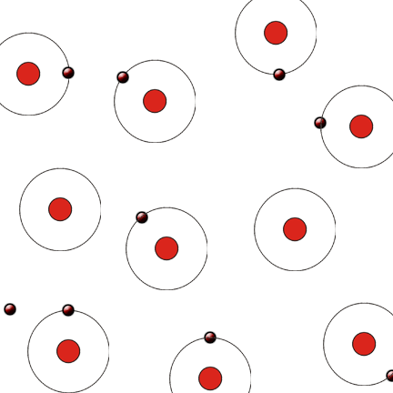

Nature of Electricity and Concept of Electricity
Electricity is the most common form of energy. Electricity is used for various applications; such as lighting, transportation, cooking, communication, production of various goods in factories and much more.
None of us exactly know that what is electricity. The concept of electricity and theories behind it, can be developed by observing its different behaviors. For observing nature of electricity, it is necessary to study the structure of matters.
Every substance in this universe is made up of extremely small particles known as molecules. The molecule is the smallest particle of a substance into which all the identities of that substance are present. The molecules are made up of further smaller particles known as atoms. An atom is the smallest particle of an element that can exist. There are two types of substances. The substance, that's molecules are made of similar atoms is known as an element. The matter whose molecules consisting dissimilar atoms, is called a compound. The concept of electricity can be achieved from the atomic structures of substances.
Structure of Atom
An atom consists of one central nucleus. The nucleus is made up of positive protons and charge less neutrons. This nucleus is surrounded by numbers of orbital electrons.
Each electron has a negative charge of − 1.602 X 10 − 19 Coulomb and each proton in the nucleus has a positive charge of + 1.602 X 10 − 19 Coulomb.
Because of the opposite charge there is some attraction force between the nucleus and orbiting electrons. Electrons have relatively negligible mass compared to the mass of the nucleus. The mass of each proton and neutrons is 1840 times the mass of an electron. As the modulus value of each electron and each proton are same, the number of electrons is equal to the number protons in an electrically neutral atom.
An atom becomes positively charged ion when it loses electrons and similarly an atom becomes negative ion when it gains electrons.
Structure of Atom
Atoms may have loosely bonded electrons in their outermost orbits. These electrons require a very small amount of energy to detach themselves from their parent atoms. These electrons are referred as free electrons which move randomly inside the substance and transferred from one atom to another. Any piece of substances which as a whole contains an unequal number of electrons and protons is referred as electrically charged. When there is more number of electrons compared to its protons, the substance is said to be negatively charged and when there is more number of protons compared to electrons, the substance is said to be positively charged. The basic nature of electricity is, whenever a negatively charged body is connected to a positively charged body by means of a conductor, the excess electrons of negative body starts flowing towards the positive body to compensate the lack of electrons in that positive body.
Hope you got the very basic concept of electricity from the above explanation.
There are some materials which have plenty of free electrons at normal room temperature. Very well known examples of this type of materials are, silver, copper, aluminium, zinc etc. The movement of these free electrons can easily be directed to a particular direction if the electrical potential difference is applied across the piece of these materials. Because of plenty of free electrons these materials have good electrical conductivity. These materials are referred as good conductor. The drift of electrons in a conductor in one direction is known as the electric current . Actually electrons flow from lower potential (-Ve) to higher potential (+Ve) but the general conventional direction of current has been considered as the highest potential point to lower potential point, so the conventional direction of electric current has been just opposite of the direction of flow of electrons.
In non-metallic materials, such as glass, mica, slate, porcelain, the outermost orbit is completed and there is almost no chance of loosing electrons from its outermost shell. Hence there is hardly any free electron present in this type of material. Hence, these materials cannot conduct electricity in other words electrical conductivity of these materials is very poor. Such material are known as non - conductor or electrical insulator. The nature of electricity is to flow through a conductor while an electrical potential difference applied across it, but not to flow through insulator even high electrical potential difference applied across them.
 by
by {kind=link}
{kind=link}